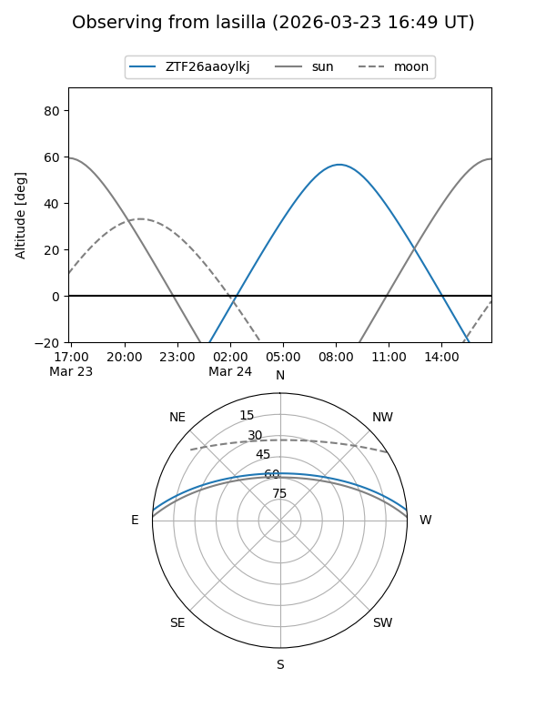
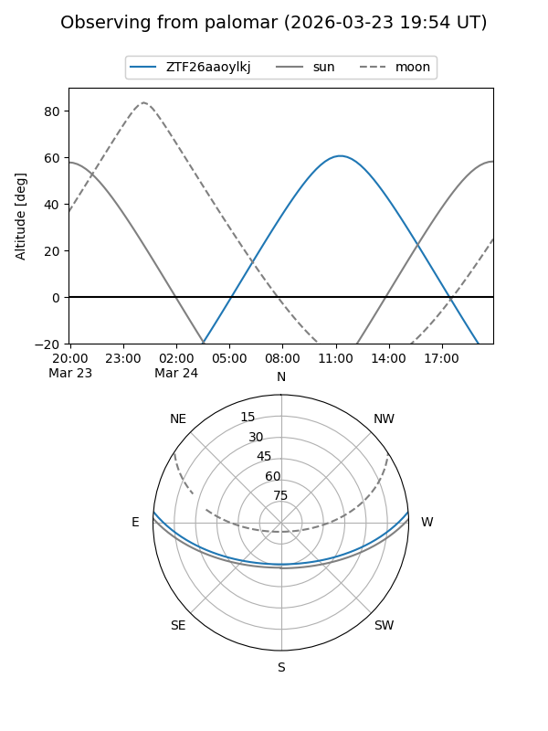

ZTF26aaoylkj
Target ZTF26aaoylkj at 2026-03-23 12:54
Aliases and brokers:
FINK: link
Lasair: link
ALeRCE: link
alt names
ZTF26aaoylkj (ztf,fink_ztf)
Coordinates:
equatorial (ra, dec) = 233.7589,+4.15067
equatorial (HMS+DMS) = 15:35:02.14,+04:09:02.42
galactic (l, b) = (9.7723,+44.74443)
Flags:
Photometry:
last ztfg=18.06
1 ztfg detections
Lightcurve
Visibility


Additional plots